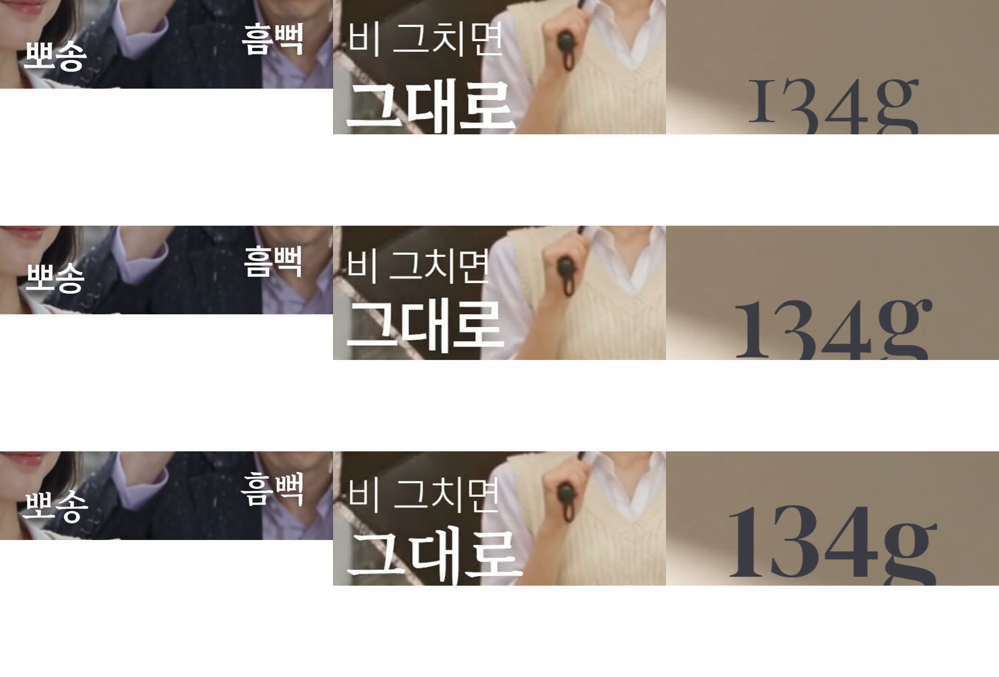

원큐 옵션 3 실험 — v2 · v3 · v4
같은 제품(나디아 「초경량 카본 3단 슬림 플라워 암막 우양산」)으로 만드는 방식을 바꿔 세 판을 뽑았습니다. 지금 방식(v1)과 나란히 비교했습니다. 모두 시댄스 2.5 · 480p · 15초 · 생성 1회씩, 고치지 않은 첫 결과입니다.
v1(지금 방식)과 무엇이 다른가
| v1 지금 방식 | 새 방식(v2·v3·v4 공통) | |
|---|---|---|
| 재료 | 제품 사진 1장 + 컷마다 자세한 글 지시 | 그림·영상으로 재료를 줌 (첫 장면 그림, 잘 만든 광고 영상, 끝 장면 팩샷 등) |
| 연출 | 컷마다 카메라 이름·고정 문장을 우리가 정함 | 「무엇이 일어나는가」만 정하고 카메라·전환은 엔진에 맡김 |
| 검토 | 생성 전 5개 관점 검토를 여러 번 반복 | 꼭 막을 것 5개만 확인(남의 사진 재현 · 타사 상표 · 근거 없는 효능 · 납품 불가 음원 · 승인 없는 유료) |
| 인물 | 글로 「평범한 얼굴」 묘사 | 새 인물을 그림으로 먼저 만들어 매력 확인 후 사용 |
| 결과 | 제품은 정확, 화면이 멈춰 있고 밋밋함 | 더 살아 있고 매력 있음, 제품 모양은 흔들림 |
세 판
v2 9:16 쇼츠·릴스재치 한 장면
- 발상: 갑자기 소나기 — 모두 신문 쓰고 뛰는데 그녀만 여유 · 해가 뜨면 같은 우산이 양산
- 첫 장면 그림 1장(인물·장면 새로 생성) + 제품만 잘라 낸 사진 → 시댄스
- 프롬프트 4덩어리: 그림 역할 / 톤 / 시간대별 사건 / 「카메라·전환은 모델이」


- 설명형 6컷 대신 웃음이 있는 이야기 한 줄
- 인물을 그림으로 먼저 만들어 매력 확보
- 첫 화면 우산이 장우산처럼 크고 무늬가 다름
- 해 뜬 컷에서 우산이 검게 바뀜
- 첫 장면 그림의 남산타워·간판이 그대로 나옴 · 처음 한 번 생성 거부(환불)
- 제품 사진을 여러 장(펼침·접힘·무늬 확대)으로 보강
- 첫 장면 그림엔 실제 장소 표지(타워·간판) 넣지 않기
시댄스에 준 것 — 참조·사진·프롬프트 (눌러서 보기)
시댄스 2.5 · omni_reference · 15초 · 9:16 · 480p 초안 · 그림 2장(첫 장면=Image 1, 제품=Image 2)
첫 장면 그림 만든 프롬프트 · 참조 = 제품 잘라낸 것
Photoreal vertical commercial still, premium editorial look. A busy Seoul crosswalk in a sudden summer downpour, wet asphalt reflecting city lights, soft grey daylight. Several pedestrians in the background rush past holding bags and newspapers over their heads, slightly motion-blurred. In the center, walking calmly toward camera, a stylish Korean woman in her mid-twenties with a glossy chin-length bob, cream knit vest over a white shirt and a light denim midi skirt, smiling with amused confidence, holding the open umbrella from Image 1 above her: a white canopy covered in a dense dark grey hand-drawn peony print, compact three-fold umbrella with a slim handle. She is completely dry under it, raindrops bouncing off the canopy. Shallow depth of field, crisp focus on her and the umbrella, natural skin texture, cinematic color with soft white, slate grey and a hint of warm street light.
실사 세로 광고 스틸, 고급 화보 느낌. 갑자기 여름 소나기가 쏟아진 서울의 붐비는 횡단보도, 젖은 아스팔트에 도시 불빛이 비치고 부드러운 회색 낮빛. 뒤쪽 행인 여럿이 가방·신문을 머리에 이고 뛰어간다(살짝 흔들림). 가운데에는 윤기 나는 턱선 단발, 흰 셔츠 위 크림 니트 조끼, 연청 미디 스커트를 입은 20대 중반 한국 여성이 재밌다는 듯 자신 있게 웃으며 카메라 쪽으로 여유롭게 걸어온다. 머리 위에는 그림 1의 펼친 우산 — 흰 바탕에 짙은 회색 손그림 모란이 빽빽한 콤팩트 3단 우산, 가는 손잡이. 우산 아래 그녀는 완전히 말라 있고 빗방울이 우산 위에서 튄다. 얕은 심도, 인물과 우산에 선명한 초점, 자연스러운 피부 결, 부드러운 흰색·청회색에 따뜻한 거리 불빛이 살짝 도는 영화 같은 색.
시댄스 프롬프트
ASSET MAPPING Image 1 defines the opening scene, the heroine (glossy chin-length bob, cream knit vest over a white shirt, light denim midi skirt, white loafers), the rainy Seoul crosswalk and the overall look. Image 2 defines the exact product canopy: a white canopy covered in a dense dark grey hand-drawn peony print. It is a compact, slim three-fold umbrella with a modest canopy size. Preserve the heroine and this print in every shot. BRIEF A charming 15-second vertical Korean commercial with one simple visual joke: in a sudden summer downpour everyone panics, but she alone strolls through it dry and delighted — and when the sun comes back, the same umbrella simply becomes her parasol. Premium editorial cinematography, natural light, soft white and slate grey with warm city glints. Strong comic timing, edited shots within one complete film. [00:00–00:03] Start immediately close to image 1: the crowded crosswalk in heavy rain, people rushing past with bags and newspapers over their heads, while she walks calmly toward camera under the peony umbrella, smiling. [00:03–00:05.5] Close shot: rain bouncing off the peony canopy; her shoulders and knit vest perfectly dry. A soaked office worker beside her glances at her umbrella with envy; she gives a tiny polite nod. [00:05.5–00:08.5] She reaches the other side; the rain stops and bright sunshine breaks through the clouds. Without missing a step she tilts the same umbrella back and keeps walking in its shade as a parasol, sunlight glowing through the street. [00:08.5–00:11.5] Close-up of her hands folding the umbrella into a short slim bundle with the peony fabric neatly wrapped, and sliding it into her small white shoulder bag; it fits easily. She pats the bag with a satisfied smile. [00:11.5–00:15] Product hero: the open peony umbrella standing in clean soft daylight, half the frame catching sun and half a few falling raindrops, print sharp and centered. A light, playful acoustic groove from the first second; rain sounds and a soft city murmur under it; the groove brightens when the sun breaks through. At 00:12 a bright Korean female voiceover says exactly: "맑은 날도, 비 오는 날도. 백삼십사 그램." Only this one line of speech; no subtitles or on-screen text, no logos. Natural hands and umbrella mechanics, consistent umbrella size. Keep the panic-versus-calm joke, the sun turn and the fold-into-bag beat; let the model choose camera transitions, micro-reactions, rain and light detail.
[그림 역할] 그림 1 = 첫 장면·여주인공(윤기 나는 턱선 단발, 흰 셔츠 위 크림 니트 조끼, 연청 미디 스커트, 흰 로퍼)·비 오는 서울 횡단보도·전체 톤. 그림 2 = 정확한 우산 천 — 흰 바탕에 짙은 회색 손그림 모란이 빽빽함. 크기가 적당한 콤팩트 슬림 3단 우산. 모든 컷에서 여주와 이 무늬를 유지. [요약] 매력적인 15초 세로 한국 광고, 단순한 시각 개그 하나: 갑자기 여름 폭우가 쏟아져 모두 허둥대는데 그녀만 젖지 않고 즐겁게 걷는다 — 해가 다시 나면 같은 우산이 그대로 양산이 된다. 고급 화보 촬영, 자연광, 부드러운 흰색·청회색에 따뜻한 도시 빛. 코미디 타이밍은 확실하게, 한 편의 완결된 영상 안에서 편집된 컷들로. [0~3초] 그림 1에서 바로 시작: 폭우 속 붐비는 횡단보도, 가방·신문을 머리에 인 사람들이 지나가는데 그녀는 모란 우산 아래에서 웃으며 차분히 카메라 쪽으로 걸어온다. [3~5.5초] 가까운 컷: 모란 우산 위에서 튀는 빗방울, 그녀의 어깨와 니트 조끼는 뽀송. 옆의 흠뻑 젖은 회사원이 부럽다는 듯 우산을 쳐다보고, 그녀는 살짝 예의 바르게 고개를 끄덕인다. [5.5~8.5초] 건너편에 도착하자 비가 그치고 구름 사이로 햇빛. 걸음을 멈추지 않고 같은 우산을 뒤로 기울여 양산처럼 그늘 속을 걷는다. 거리에 햇빛이 번진다. [8.5~11.5초] 손 클로즈업: 우산을 짧고 슬림하게 접어 모란 천을 가지런히 감싸고, 작은 흰 숄더백에 쏙 넣는다. 그녀가 가방을 톡 치며 만족스럽게 웃는다. [11.5~15초] 제품 주인공 컷: 펼친 모란 우산이 깨끗하고 부드러운 낮빛 속에 서 있다. 화면 반은 햇빛, 반은 떨어지는 빗방울 몇 개. 무늬는 선명하게 가운데. [소리·끝 문단] 첫 초부터 가볍고 장난스러운 어쿠스틱 리듬, 그 밑에 빗소리와 도시 소음. 해가 나면 리듬이 밝아진다. 12초에 밝은 한국 여성 내레이션이 정확히 「맑은 날도, 비 오는 날도. 백삼십사 그램.」 이 한 줄만 말한다. 자막·화면 글자·로고 없음. 손과 우산 구조는 자연스럽게, 우산 크기 일정하게. 허둥지둥 대 여유 개그, 해가 나는 전환, 접어서 가방에 넣는 장면은 꼭 넣고 — 카메라 전환·작은 반응·비와 빛 디테일은 모델이 고른다.
v3 16:9 유튜브잘 만든 광고를 틀로
- 우리 자체 작품(파도 가로 광고) 앞 15초를 「리듬·컷 순서 참고용」 영상으로 넣음
- 사람·장소·제품은 따라 하지 말라고 지정 + 제품만 자른 사진
- ByteDance 공식 샘플 방식(틀 영상 + 제품)
- 구조를 글이 아니라 영상으로 넘김 → 화면 리듬·색감이 가장 영화 같음
- 틀 영상을 잘못 골랐음 — Dan이 말한 두 편(빨대 서핑·롤러장, 둘 다 9:16) 대신 16:9를 맞추려 보관함의 「PADO 최종 가로 44초」(자체 시험판)를 묻지 않고 넣음. 한강변·노을은 이 틀을 따라간 것 → 틀 영상 방식의 공정한 시험이 아님
- 우산 무늬가 얼룩처럼 바뀜(제품 정확도 최하)
- 비가 거의 안 보이고 접는 동작이 어색
- 시작 화면에서 인물이 작아 첫 2초가 약함
- 틀 영상은 리듬만, 제품은 여러 장 사진으로 단단히
- 첫 2초는 인물·제품이 크게 보이는 틀 구간을 고르기
시댄스에 준 것 — 참조·사진·프롬프트 (눌러서 보기)
시댄스 2.5 · omni_reference · 15초 · 16:9 · 480p 초안 · 영상 1개(구조 참고) + 그림 1장(제품)
시댄스 프롬프트
REFERENCE ROLES Video 1 is a structure reference ONLY: borrow its rhythm, pacing, shot order and cinematic energy — a calm wide establishing shot of a sunny Seoul riverside, a person easing into the moment, a satisfying close product insert, a natural reaction close-up, then a brief contrast scene. Do not copy its people, faces, locations, product, can, cooler, text or colors. Image 1 is the only product: a compact three-fold umbrella with a white canopy covered in a dense dark grey hand-drawn peony print. Keep this exact print on the canopy in every shot. BRIEF A polished 15-second horizontal Korean lifestyle commercial for a feather-light folding umbrella that works for both sun and rain. Warm natural daylight, premium editorial cinematography, soft white and slate-grey palette with summer greens. One new heroine: a Korean woman in her late twenties with a sleek low ponytail, small silver hoop earrings, a crisp sage-green linen shirt and white trousers, a bright confident smile. Edited shots within one complete film. [0–3s] Wide establishing shot of a bright riverside park path in Seoul at midday, strong sunlight, trees and water sparkling. The heroine walks into frame under the open peony umbrella, its print glowing in the sun. [3–6s] Medium shot: she slows down and tilts the umbrella back slightly, enjoying the shade on her face, relaxed and elegant. [6–8.5s] Close product insert: her hand closes the umbrella and folds it into a short slim bundle, the peony fabric neat, and slips it into a small shoulder bag; it disappears easily. [8.5–11.5s] Sudden contrast: the sky turns grey and a light rain begins; nearby people hurry past covering their heads. She calmly takes the umbrella back out, opens it and keeps walking under it, rain beading on the peony canopy. [11.5–15s] Product hero: the open peony umbrella in soft rain-to-sun light, slowly rotating against a clean bright background, the print sharp and centered. A light acoustic summer groove from 0s, a brief hush when the rain starts, then it resumes. At the end only, a bright Korean female voiceover says exactly: "맑은 날도, 비 오는 날도. 백삼십사 그램." No other dialogue, no subtitles or on-screen text, no logos. Keep the heroine, the umbrella print and the sun-to-rain contrast; choose elegant camera moves, transitions, micro-acting and realistic weather effects like a high-end commercial.
[참조 역할] 영상 1 = 구조 참고용만: 리듬·속도·컷 순서·영화 같은 에너지만 빌린다 — 맑은 서울 강변의 여유로운 와이드 첫 컷, 그 순간에 스며드는 사람, 만족스러운 제품 클로즈업, 자연스러운 반응 클로즈업, 짧은 반전 장면. 영상 1의 사람·얼굴·장소·제품·캔·아이스박스·글자·색은 베끼지 않는다. 그림 1 = 유일한 제품: 흰 바탕에 짙은 회색 손그림 모란이 빽빽한 콤팩트 3단 우산. 모든 컷에서 이 무늬 그대로. [요약] 햇빛·비 둘 다 되는 깃털처럼 가벼운 접이식 우산의 세련된 15초 가로 한국 라이프스타일 광고. 따뜻한 자연광, 고급 화보 촬영, 부드러운 흰색·청회색에 여름 초록. 새 여주인공 한 명: 20대 후반 한국 여성, 매끈한 낮은 포니테일, 작은 은색 링 귀걸이, 빳빳한 세이지그린 리넨 셔츠와 흰 바지, 밝고 자신 있는 미소. 한 편 안에서 편집된 컷들. [0~3초] 한낮 서울 강변공원 산책로의 밝은 와이드 컷, 강한 햇빛, 반짝이는 나무와 물. 여주가 펼친 모란 우산 아래로 화면에 걸어 들어오고, 무늬가 햇빛에 빛난다. [3~6초] 미디엄 컷: 걸음을 늦추고 우산을 살짝 뒤로 기울여 얼굴의 그늘을 즐긴다. 편안하고 우아하게. [6~8.5초] 제품 클로즈업: 손으로 우산을 닫아 짧고 슬림하게 접고, 모란 천을 가지런히 해 작은 숄더백에 넣는다. 쏙 사라진다. [8.5~11.5초] 갑작스러운 반전: 하늘이 흐려지고 가는 비가 시작된다. 주변 사람들이 머리를 감싸고 서두른다. 그녀는 차분히 우산을 다시 꺼내 펴고 계속 걷는다. 모란 천 위에 빗방울이 맺힌다. [11.5~15초] 제품 주인공 컷: 비에서 해로 넘어가는 부드러운 빛 속, 깨끗하고 밝은 배경 앞에서 천천히 도는 펼친 모란 우산. 무늬는 선명하게 가운데. [소리·끝 문단] 0초부터 가벼운 어쿠스틱 여름 리듬, 비가 시작될 때 잠깐 조용해졌다가 다시 이어진다. 끝에만 밝은 한국 여성 내레이션이 정확히 「맑은 날도, 비 오는 날도. 백삼십사 그램.」 다른 대사·자막·화면 글자·로고 없음. 여주, 우산 무늬, 해→비 반전은 유지하고 — 우아한 카메라 움직임·전환·작은 연기·실감 나는 날씨 효과는 고급 광고처럼 골라라.
v4 4:5 인스타 피드첫·끝 장면 고정
- 첫 장면(햇빛 아래 인물) + 끝 장면(제품 팩샷)을 그림으로 만들어 고정
- 중간은 공식 문법대로 구간마다 카메라 하나씩 지정
- 3:4로 만들어 위아래만 잘라 4:5


- 시작·끝을 그림으로 묶어 가장 깔끔하고 인물이 일관됨
- 접은 우산이 실제 3단처럼 나옴
- 12초 우산 꼭지가 두 개 · 안쪽 색이 컷마다 다름
- 재치가 없어 무난함 · 자막이 없어 소리 끄고 보는 피드에 약함
- 제품 참조 보강 + 끝 팩샷을 실제 제품 사진 기반으로
- v2식 재치 장면을 한 컷 얹기 · 피드용은 자막 필수
시댄스에 준 것 — 참조·사진·프롬프트 (눌러서 보기)
시댄스 2.5 · omni_reference · 15초 · 3:4로 생성 → 4:5로 위아래만 자름 · 480p 초안 · 첫 프레임 + 끝 프레임
첫 프레임 만든 프롬프트 · 참조 = 제품 잘라낸 것
Photoreal vertical commercial still, clean high-key look. Midday blazing summer sun, a bright white sky with a soft sun flare at the top corner. Low angle close-up: a young Korean woman with long straight black hair tucked behind one ear, wearing a sleeveless soft-blue linen dress and thin gold necklace, holds the open umbrella from Image 1 just above her head: a white canopy covered in a dense dark grey hand-drawn peony print, compact three-fold umbrella. The canopy fills the top third of the frame, its print sharp; her face below is in cool soft shade, eyes relaxed with a gentle smile, while the background is bright sunlit city greenery. Minimal, airy composition with clear space, natural skin texture, soft white and slate grey palette.
실사 세로 광고 스틸, 밝고 깨끗한 하이키. 한낮 뜨거운 여름 해, 밝은 흰 하늘, 위쪽 모서리에 부드러운 햇빛 번짐. 낮은 각도 클로즈업: 긴 생머리를 한쪽 귀 뒤로 넘긴 젊은 한국 여성이 민소매 연파랑 리넨 원피스와 얇은 금목걸이 차림으로 그림 1의 펼친 우산을 머리 바로 위로 든다 — 흰 바탕에 짙은 회색 손그림 모란이 빽빽한 콤팩트 3단 우산. 우산이 화면 위 1/3을 채우고 무늬가 선명하다. 그 아래 얼굴은 시원한 그늘 속, 편안한 눈과 잔잔한 미소. 배경은 햇빛 받은 도시 녹음. 여백 있는 단정한 구도, 자연스러운 피부 결, 부드러운 흰색·청회색.
끝 프레임 팩샷 만든 프롬프트 · 참조 = 제품 잘라낸 것
Photoreal premium product packshot, vertical. The exact umbrella from Image 1, open, a white canopy covered in a dense dark grey hand-drawn peony print, a compact three-fold umbrella with a slim black handle, shown from a slight three-quarter angle and tilted gently, centered on a clean soft white-to-pale-grey seamless studio background with gentle daylight and a soft shadow below. The print is sharp and accurate. Nothing else in the frame, generous clean space around the product.
실사 고급 제품 팩샷, 세로. 그림 1과 똑같은 우산을 펼친 모습 — 흰 바탕에 짙은 회색 손그림 모란이 빽빽한 콤팩트 3단 우산, 가는 검은 손잡이. 살짝 비스듬한 3/4 각도로 약간 기울여, 흰색에서 옅은 회색으로 이어지는 깨끗한 스튜디오 배경 한가운데에 둔다. 부드러운 낮빛, 아래에 옅은 그림자. 무늬는 선명하고 정확하게. 다른 것은 없고 제품 둘레에 넉넉한 여백.
시댄스 프롬프트
Image 1 is the first frame and Image 2 is the last frame. The same young Korean woman (long straight black hair, sleeveless soft-blue linen dress, thin gold necklace) and the same compact three-fold umbrella with a white canopy covered in a dense dark grey hand-drawn peony print appear throughout. A clean, premium 15-second vertical commercial about one feather-light umbrella for both sun and rain. High-key editorial daylight, soft white and slate grey palette, calm confident pacing, edited shots within one film. [0–3s] Low-angle medium close-up from the first frame, slow push-in: blazing midday sun, she stands in the cool shade of the open peony umbrella and closes her eyes for a relaxed breath. [3–6s] Static close shot of her hand at shoulder height: she folds the umbrella into a short slim bundle and holds it lightly between two fingers, showing how small and light it is. [6–9s] Tracking shot at walking pace: she strolls down a bright tree-lined city sidewalk, swinging the small folded umbrella from its wrist strap. [9–12s] Quick cut, slight crane-down: clouds roll in and a light rain begins on the sidewalk; she opens the umbrella in one smooth motion and keeps walking, raindrops beading on the peony canopy while she stays dry. [12–15s] Slow orbit settling into the last frame: the open peony umbrella alone on a clean soft white studio background. Soft modern acoustic music from 0s, light rain sound from 9s, the music resolving into a gentle final chord. At 12s a calm Korean female voiceover says exactly: "맑은 날도, 비 오는 날도. 백삼십사 그램." Only this one line; no subtitles or on-screen text. Natural hands and umbrella mechanics, consistent umbrella size and print, photoreal detail.
[그림 역할] 그림 1 = 첫 프레임, 그림 2 = 마지막 프레임. 같은 젊은 한국 여성(긴 생머리, 민소매 연파랑 리넨 원피스, 얇은 금목걸이)과 같은 콤팩트 3단 우산(흰 바탕에 짙은 회색 손그림 모란이 빽빽함)이 처음부터 끝까지 나온다. [요약] 햇빛과 비 둘 다 되는 깃털처럼 가벼운 우산 하나를 다루는 깔끔하고 고급스러운 15초 세로 광고. 밝은 하이키 화보 낮빛, 부드러운 흰색·청회색, 차분하고 자신 있는 호흡, 한 편 안에서 편집된 컷들. [0~3초] 첫 프레임에서 낮은 각도 미디엄 클로즈업, 천천히 다가감: 뜨거운 한낮 해, 그녀가 펼친 모란 우산의 시원한 그늘 아래 서서 눈을 감고 편안히 숨을 쉰다. [3~6초] 고정된 가까운 컷, 어깨 높이의 손: 우산을 짧고 슬림하게 접어 두 손가락 사이에 가볍게 든다 — 얼마나 작고 가벼운지 보여 줌. [6~9초] 걷는 속도의 트래킹 컷: 밝은 가로수 길 인도를 걸으며 손목 끈에 건 작게 접힌 우산을 흔든다. [9~12초] 빠른 컷, 살짝 내려오는 크레인: 구름이 몰려와 인도에 가는 비가 시작된다. 그녀가 한 번에 매끄럽게 우산을 펴고 계속 걷는다. 모란 천에 빗방울이 맺히고 그녀는 젖지 않는다. [12~15초] 천천히 돌며 마지막 프레임으로 안착: 깨끗하고 부드러운 흰 스튜디오 배경 위 펼친 모란 우산 하나. [소리·끝 문단] 0초부터 부드러운 모던 어쿠스틱 음악, 9초부터 가는 빗소리, 음악은 잔잔한 마지막 화음으로 끝난다. 12초에 차분한 한국 여성 내레이션이 정확히 「맑은 날도, 비 오는 날도. 백삼십사 그램.」 이 한 줄만. 자막·화면 글자 없음. 손과 우산 구조는 자연스럽게, 우산 크기·무늬 일정하게, 실사 디테일.
후작업까지 한 판
위 생성 원본에 자막·음악·끝 장면을 입힌 것입니다. 크레딧은 쓰지 않았습니다. 만든 뒤 지시문을 모르는 검수자에게 정답 제품 사진과 함께 보여 판정받았고, 검수자 판정 중 원본과 다른 곳은 제가 다시 열어 확인했습니다.
| 공통으로 한 것 | |
|---|---|
| 자막 | 글자 라이브러리 카드에서 분위기에 맞춰 고름 · 매체별 공식 안전구역 자막 띠에만 놓음 |
| 음악 | 시댄스가 만든 BGM·내레이션 그대로(음량만 표준으로) — 한 판으로 뽑은 영상은 엔진 BGM 을 쓰는 규칙. 처음엔 무료 음원으로 바꿨다가 규칙 위반이라 되돌림 |
| 끝 장면 | 13.5초부터 흰 바탕 + 나디아 워드마크(스토어 원본) + 「134g · 상품명」 |
| 문구 근거 | 134g·「맑은 날도, 비 오는 날도」 = 광고주 의뢰서 원문 · 3단·암막·카본 = 공식 상품명 · 효능 숫자는 쓰지 않음 |
v2 후작업 9:16
- 자막: 흰 상자 해설 자막(예능 「제작진 코멘트」형) — 「(그 우산 어디 거예요?)」처럼 장면에 말을 거는 재치
- 음악: 엔진 BGM 그대로
- 끝 장면에 어디서 사는지가 없음
- 흰 상자가 인물 몸통 위에 놓임
- (생성) 2초 남산타워·간판 · 6.5초 검은 우산 · 가방 속 접힌 우산이 굵은 통 모양
- 후작업: 끝 장면에 구매처(스토어 이름) 넣기 · 상자를 인물 옆 빈 곳으로
- 생성: 제품 다각도 앵커로 다시 · 첫 장면 그림에 랜드마크·간판 넣지 않기
v3 후작업 16:9
- 자막: 단어별로 올라오는 자막(처음 고른 얇은 시네마 자막은 밝은 화면에서 약해 교체)
- 음악: 엔진 BGM 그대로
- 자막 색이 장면 밝기에 따라 흰색↔갈색으로 바뀌어 일관되지 않음
- 16:9 끝 장면 글자가 작음 · 구매처 없음
- (생성) 우산이 검게·남색으로 나옴 · 「가방에 쏙」 자막에 가방 넣는 동작이 없음
- 후작업: 자막을 흰 글자+외곽선 하나로 고정 · 끝 장면 키우기·구매처
- 생성: 제품 앵커 · 자막과 맞는 동작을 시간 구간에 명시
v4 후작업 4:5
- 자막: 단어별로 올라오는 자막 — 소리 끄고 보는 피드라 다섯 문장으로 내용 전달
- 음악: 엔진 BGM 그대로
- 자막 색이 섞임(어두운 글자·흰 글자) · 구매처 없음
- (생성) 첫 컷이 긴 손잡이 장우산 모양 · 접은 우산 꼭지 2개 · 걷는 컷 우산이 뭉개짐
- 후작업: 자막 색 통일 · 끝 장면에 구매처
- 생성: 제품 앵커(펼침·접힘·안쪽) 넣고 첫 장면 그림부터 앵커와 대조
자막 다시 하기 — 실제 광고 21편 조사 후 v2
이전 후작업판 자막은 「글자 카드 하나를 화면 아래 자막 띠에 문장마다 똑같이 깔기」였습니다. 실제 브랜드 광고 21편(무신사·29CM·W컨셉·젠틀몬스터·올리브영·Apple·Nike·Glossier·RIMOWA·totes 우산 등)의 화면 문구를 프레임 단위로 재서 규칙을 만들고, 그 규칙으로 v2를 컷마다 다시 설계했습니다.
이전 자막 깔기
- 말소리 없는 문구 6개가 0.5초부터 끝까지(약 97%)
- 전부 같은 흰 상자·같은 크기·같은 자리
- 컷 중간에 문구가 바뀜 · 가방 넣는 손 위에 상자
- 끝 카드: 로고(약 1%)보다 상품명이 큼
새 판 컷마다 설계
- 글자 있는 시간 약 40% — 비 오는 첫 컷·가방 컷은 글자 없이 그림만
- 「뽀송 / 흠뻑」 — 두 사람 몸 위에 한 단어씩, 웃음 포인트를 짚음
- 「비 그치면 / 그대로 양산」 — 우산이 양산으로 바뀌는 순간, 인물 옆 그늘 빈 곳에 크기 2단
- 「134g」 — 제품 컷 위쪽 빈 벽에 크게, 내레이션과 함께
- 엔드카드: 로고 폭 40%(참고작 로고 단독 27~47% 실측) + 아래 두 줄(로고 높이의 약 1/4) — 로고 원본이 208px 캡처라 업스케일해서 씀
- 서체: 한글 제목 노토 세리프 · 숫자 DM Serif · 작은 설명 Gothic A1 Light — 나디아 로고(가는 세리프)와 같은 결
- 상자·외곽선 없음 · 소리는 엔진 BGM 그대로
| 조사에서 나온 규칙(21편 실측) | 이전 | 새 판 |
|---|---|---|
| 글자 없는 시간이 기본(절반 이상) | 어김 | 지킴 |
| 말소리 없는 문구 15초에 0~3개 | 6개 | 2개(+말과 같이 나오는 134g) |
| 상자·외곽선 없음 — 빈 곳·어두운 면을 골라 읽히게 | 상자 | 없음 |
| 크기 2단 이상(큰 한마디 + 작은 설명) | 한 단 | 2단 |
| 문구는 컷마다 빈 곳에 | 아래 고정 | 컷마다 다른 자리 |
| 손이 제품을 다루는 순간엔 글자 없음 | 어김 | 지킴 |
| 끝은 로고가 주인공 + 한두 줄 | 어김 | 지킴 |

나란히 본 순위 (만든 방식을 모르는 평가자)
| 질문 | 1위 | 2위 | 3위 | 4위 |
|---|---|---|---|---|
| 멈춰서 보게 되나 | v2 | v4 | v1 | v3 |
| 재치·매력 | v2 | v3 | v4 | v1 |
| 제품이 실물과 같나 | v1 | v2 | v4 | v3 |
| 그 매체에 맞게 만들었나 | v1 | v2 | v3 | v4 |
| 종합 | v2 | v1 | v4 | v3 |
다음 단계
- 기본 방식은 v2(재치 한 장면 + 그림으로 재료) — 가장 「보고 싶은」 광고가 나왔음
- 제품 정확도 보강 — 제품 사진을 여러 장(펼침·접힘·무늬 확대·팩샷)으로 넣기. 새 방식의 공통 약점
- 첫 장면 그림 규칙 — 사람·장소는 새로 만들고, 실제 장소 표지(타워·간판)는 넣지 않기
- 매체별 마무리 — 피드(4:5)는 자막 필수, 쇼츠(9:16)는 첫 1초 훅
비용: 세 판 합계 약 139cr(영상 45cr × 3 + 그림 1.5cr × 3) · 생성 거부 1회는 환불 · 제품 참조는 판매 사진에서 제품 부분만 잘라 사용(사람·장면은 쓰지 않음)